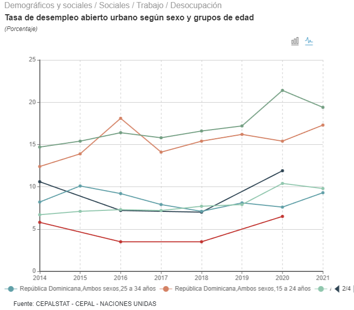

Reflexiones de Chente: el derecho a mentir
Vicente Luis De pena P., M.Sc.VTyP, 31 de octubre 2023
Siempre he apostado por una manera innovadora de hacer política. No me refiero necesariamente a una “política diferente”, sino a renovar sobre los cimientos de lo que ya existe, modificando de alguna manera la realidad actual. Considero esencial que los cambios puedan realizarse, tomando en cuenta lo ya establecido y construido. En este sentido, creo que existen dos elementos cruciales en la política actual que necesitamos proteger:
Primero, lo que nuestro presidente Luis Abinader describe como la característica más importante que debe tener un joven: ser honesto y no mentir con intenciones engañosas.
Segundo, estar consciente de que el principal objetivo de un joven político hoy día es contribuir de manera significativa a la construcción de una visión de país y trabajar arduamente para materializarla.
Debido a una combinación de oportunidades y experiencias, y la natural despreocupación que tenemos a los 20 años acerca del paso del tiempo y sus consecuencias, ser joven parece ser uno de los actos más radicales y peligrosos que enfrentamos globalmente. Esto también pone en riesgo esos elementos esenciales que mencioné anteriormente.
Imagina iniciar la construcción de los cimientos de tu futuro sin una experiencia previa significativa. A esto, añádele la avalancha de información y desinformación actual, que te obliga a enfrentar la ardua tarea de seleccionar entre un océano de opciones en una edad donde nuestra conciencia sobre los derechos empieza a florecer. Derechos que, en muchos casos, nos hacen sentir merecedores de todo el mundo.
Es una etapa donde se desata nuestra dualidad de sentimientos hacia la política; experimentamos el idealismo romántico de cómo deberían ser las cosas, y por otro lado, sentimos una cierta apatía hacia la realidad concreta. Es una fase donde reconocemos la importancia del “derecho a mentir” y, en ocasiones, luchamos por este derecho, frecuentemente invocando el bien común. Además, como si todo esto no fuera suficiente, estamos destinados a ser los custodios de estos elementos cruciales. En una etapa de la vida donde, a menudo, no medimos el paso del tiempo, jugamos con el amor, la vida, las esperanzas y los sueños. Como expresó Charles Aznavour en su icónica canción:
‘Hier encore’
“Justo ayer tenía 20 años y perdí mi tiempo haciendo locuras que solo dejaron algunas arrugas en mi frente”. Era una tristísima mirada al pasado, en la que el artista recordaba los tiempos en que tenía 20 años, y reconocía haber «desperdiciado su vida y sus años de juventud».
Contexto
¿Por qué les hablo de esto? Aquellos que me conocen saben que disfruto de una buena conversación, me gusta ese intercambio fluido de información que permite aprender de quienes, ya sea por casualidad o causalidad, cruzan palabras e ideas conmigo. Fue así que, el pasado miércoles 25 de octubre, decidí escuchar atentamente el debate de jóvenes políticos representantes de los partidos. Durante el mismo, uno de los participantes compartió una cifra que, a mi parecer, resultó bastante alarmante para la economía dominicana y la juventud. (Supongo que cuando menciona CEPAL, se refiere a la Comisión Económica para América Latina).
Lo que ellos dicen que dice la CEPAL
“La CEPAL dice que el 29%, 30% de la juventud dominicana está desempleada. Encabezamos la tasa de desempleo en toda América Latina junto con México y también en el Caribe.”
Este dato, más allá de ser alarmante, inicialmente nos pareció un posible error inocente, quizás producto del bombardeo constante de información y desinformación al que todos estamos sometidos. Nos pareció ser una muestra más de desinformación involuntaria. Desde nuestra llegada al Ministerio de la Juventud, mediante la recién creada Unidad Técnica de Estudios Sobre Juventudes, hemos trabajado sistemáticamente para visualizar y analizar todos los datos relevantes que impactan a la juventud, especialmente aquellos que la CEPAL identifica como “la llave maestra de la inclusión social juvenil: Educación y Empleo.” En este sentido, hemos logrado avances significativos.
Sin embargo, impulsados por un espíritu investigador y dado que el joven político expresó la cifra con notable certeza, decidimos buscar más información. Al revisar las redes, descubrimos que un comentario similar ya había sido hecho por la misma persona en junio de 2021, pero en esa ocasión, la afirmación era aún más alarmante. Según él, para ese año, la CEPAL establecía que el 50% de los jóvenes estaba desempleado. Esto implicaría que, en poco más de un año, el gobierno logró reducir el desempleo juvenil en más de 20 puntos porcentuales, logro por el cual deberíamos postular al presidente Luis Abinader y su equipo económico para un Premio Nobel. Por ello, hoy mi objetivo es más que refutar tales afirmaciones, buscar aclarar y puntualizar en relación con un tema tan crucial para la economía dominicana.
Lo que la CEPAL dice en verdad
Primero, es fundamental establecer que, conforme a la Ley 49-00 General de Juventud, se considera joven a cualquier individuo entre 15 y 35 años de edad; esto representa el 33.9% de la población total para el año 2023. De acuerdo con la Encuesta Nacional Continua de Fuerza de Trabajo (ECNFT), en el primer trimestre de 2023, los jóvenes dominicanos constituyen el 48% de la Población Económicamente Activa, es decir, más de dos millones de jóvenes en la República Dominicana que actualmente trabajan o están buscando empleo activamente. Además, estos jóvenes representan el 46.2% de la Población en Edad de Trabajar. La tasa de participación para 2022 fue de 63.1%, siendo esta la más alta desde 2014 (año en el que inició la ECNFT), y por primera vez igualó la tasa de participación de los adultos. Este hecho refuta la afirmación de que no existen políticas efectivas para la recuperación del empleo pospandemia. En términos simples, el empleo juvenil se ha recuperado más rápidamente postpandemia que en cualquier otro grupo de edad.
Evolución de la participación laboral por grupos etarios
Fuente: Encuesta nacional continua de fuerza de trabajo (ENCFT).
Enfocándonos ahora en los datos. Para discernir “qué dice realmente la CEPAL”, nos dirigimos directamente a CEPALSTAT, definido por la propia CEPAL como “la puerta de acceso a toda la información estadística de los países de América Latina y el Caribe…”. Aquí buscamos las tasas de desempleo por rango de edad desde 2014 hasta 2021 (los últimos datos procesados por ellos) y, tras considerar los criterios necesarios, obtenemos el siguiente gráfico, que presentamos completo:

Algunas Precisiones:
La tasa de desempleo juvenil, en los últimos 8 años, jamás ha alcanzado el 30%. Ni siquiera en 2016, cuando alcanzó uno de sus picos más altos, con un 13.7%. Ese año, ambos grupos de edad, 15 - 24 y 25 - 34, superaron sus respectivos promedios en América Latina con 18.1 y 9.2, respectivamente.
Aunque es cierto que, debido a las fluctuaciones causadas por la salida de la pandemia, la tasa fue una de las más altas, se mantuvo 2.3 puntos porcentuales debajo del promedio de América Latina y el Caribe.
En el caso de México, según estos datos, México y la República Dominicana registraron algunas de las tasas de desempleo más bajas para 2020 (último año del que se tienen datos) en ambos grupos de edad.
Datos que se omitieron
Tasa de desocupación
Vamos a analizar con más detalle las cifras de desempleo. Conforme a los datos desglosados por la Unidad Técnica de Estudios Sobre Juventudes (UESJ), provenientes de la ENCFT, la tasa de desempleo para 2022 fue del 8.6%, una cifra significativamente menor al 29% mencionado en el debate y, por supuesto, también bastante por debajo del 14.6% que fue el promedio en América Latina para 2021. Esta tasa también es la más baja registrada en los últimos 8 años.
Evolución del desempleo por grupos etarios
Tasa de ocupación
La tasa de ocupación juvenil experimentó una de las recuperaciones más rápidas de la región, pasando de niveles del 51% en el 2020, fruto de la crisis, a colocarse en casi el 58% en el 2022. Nuevamente, la más alta en los últimos 8 años, lo que se tradujo en un estrechamiento de la brecha del nivel de ocupación entre adultos y jóvenes, pasando de 8 puntos porcentuales promedio, en el periodo 2015 - 2019, a 4.8 puntos porcentuales en 2022.
Evolución de la ocupación laboral por grupos etarios
Fuente: Encuesta nacional continua de fuerza de trabajo (ENCFT).
Eso, acompañado de los niveles de subocupación más bajos en los últimos 8 años, pasando de un 6% de su ocupación en 2019, hasta el 2.4% en 2022. Es decir, los jóvenes, además de encontrar más empleos, lo hacen en lo que se prepararon. En cuanto al salario nominal, el de los jóvenes se incrementó en un 21% en comparación con el 2019.
Evolución de la subocupación laboral por grupos etarios
Fuente: Encuesta nacional continua de fuerza de trabajo (ENCFT).
Ingresos salariales
El ingreso laboral por el principal trabajo en los jóvenes se incrementó un 34.5% en comparación con 2019, a una tasa de crecimiento promedio del 8% anual. Estas cifras se presentan muy por encima de las registradas en el periodo 2016–2019, cuando el ingreso juvenil presentó un incremento del 16% a una tasa de crecimiento del 3.8% en promedio anual.
Evolución de los ingresos monetarios laborales mensuales de los trabajadores asalariados según grupos etarios asalariados
Fuente: Encuesta nacional continua de fuerza de trabajo (ENCFT).
Nota: Salarios reales referidos a precios de octubre 2019- septiembre 2020.
Lo más fácil para un político es mentir; la filosofía, en numerosas ocasiones, lo ha permitido como una medida “para garantizar el bien común”. Sin embargo, es el mismo Maquiavelo quien censura el mentir, calificándolo de despótico y elitista, propio de quienes desean conservar el poder a toda costa para mantener sus privilegios, garantizando la exclusión de la participación política de la mayoría y cerrando toda esperanza a mejoras. Esto describe la forma de gobernar durante 20 años de la historia política dominicana; no me sorprende que ahora quieran perpetuarlo desde la oposición. Pero no preocupa, pues como dice Canserbero: “Aquí las mentiras tienen patas y tarde o temprano cojean”.
A los jóvenes de cualquier partido, les digo, que no podemos seguir haciendo política basada en la manipulación de datos y en la construcción de realidades alternas, en las que nos consideramos Rocky Balboa y los demás charros. Debemos ser cautelosos para evitar que nuestra travesía por la política dominicana nos conduzca hacia una crisis existencial al estilo Aznavour. No abusemos más de nuestro supuesto derecho a mentir, pues ya los jóvenes identifican los niveles de las mentiras, y prefieren dejarlos hablando con el ECO y escuchar a:
‘MONACO’
Las informaciones suministradas en este articulo pueden ser ampliadas en el tablero interactivo “Mercado Laboral Juvenil” colgado en el portal de la Unidad Tecnica de Estudios Sobre Juventudes del Ministerio de la Juventud (https://juventud.gob.do/dashboard/).